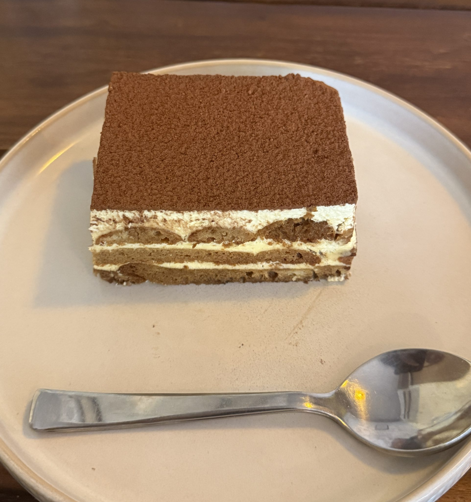
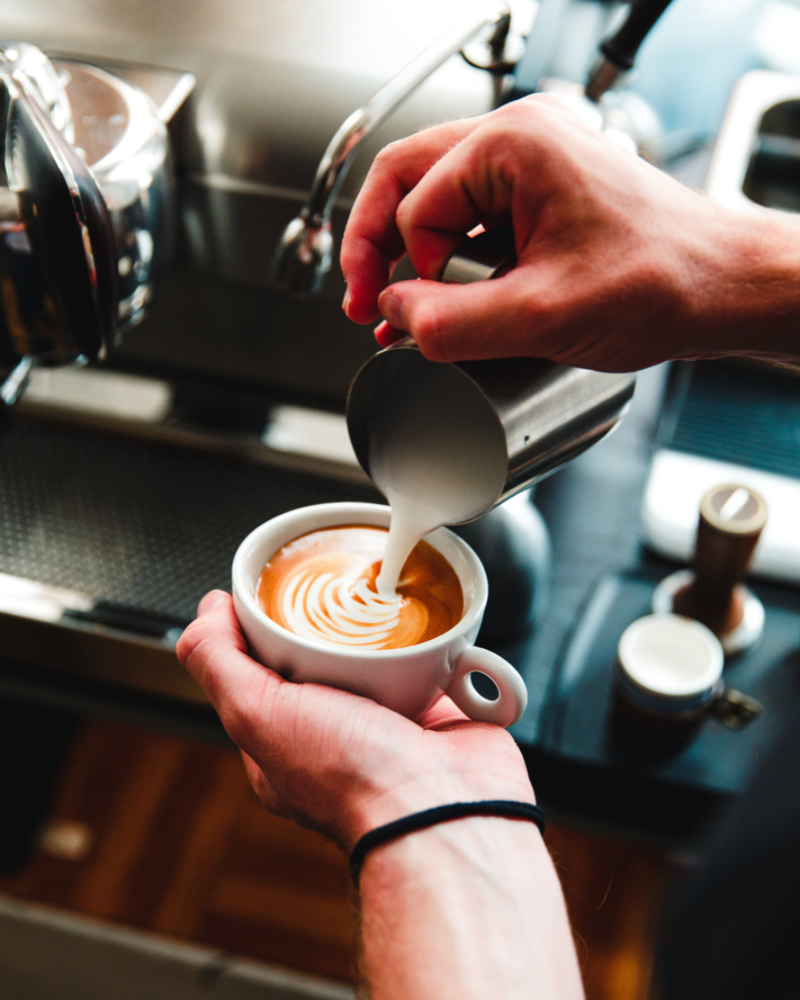
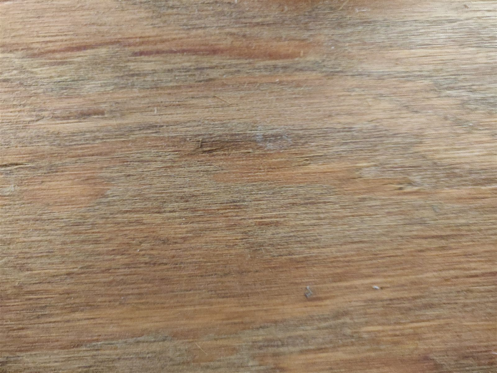
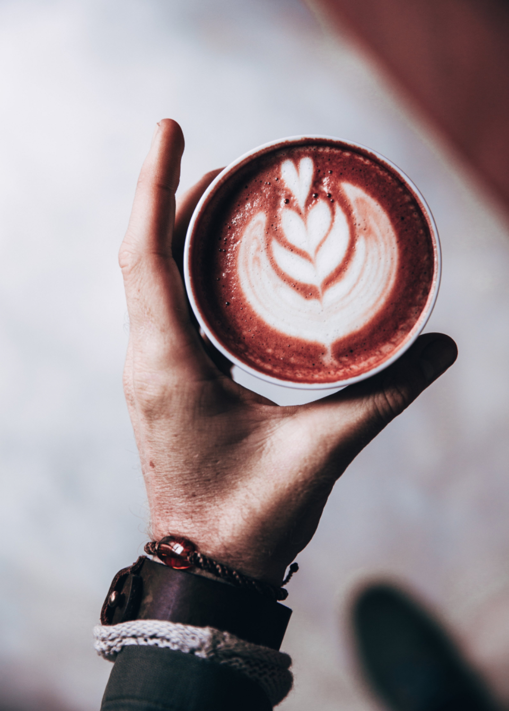
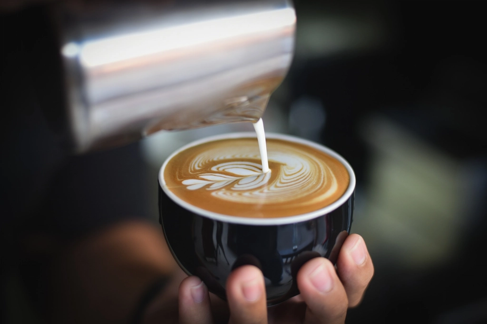
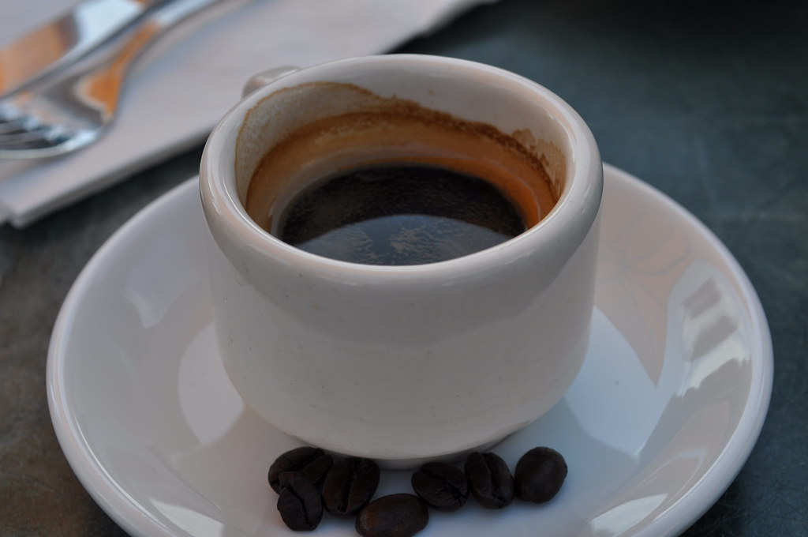
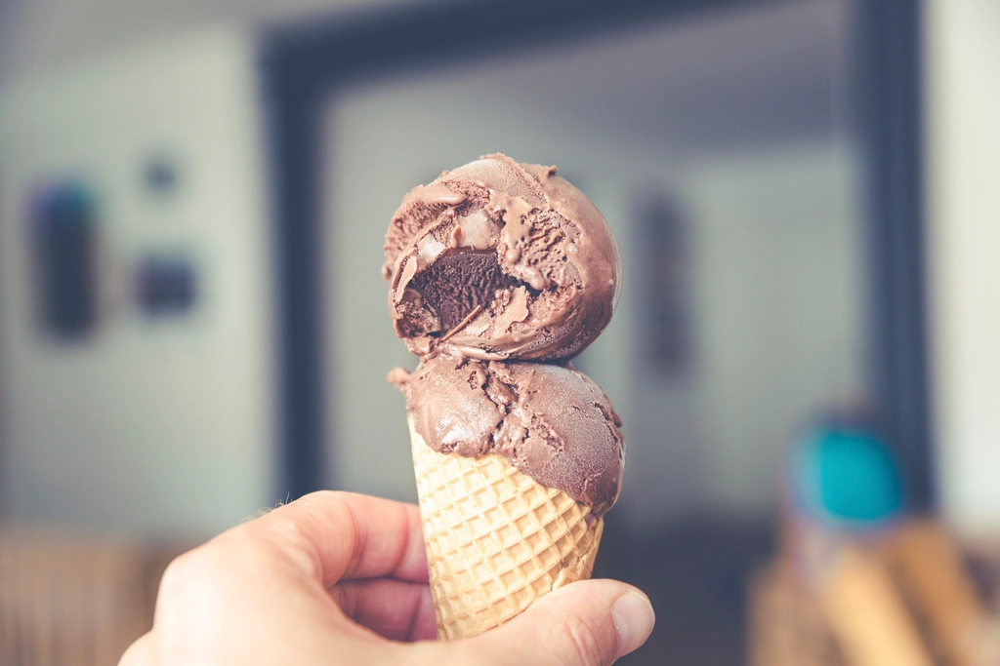
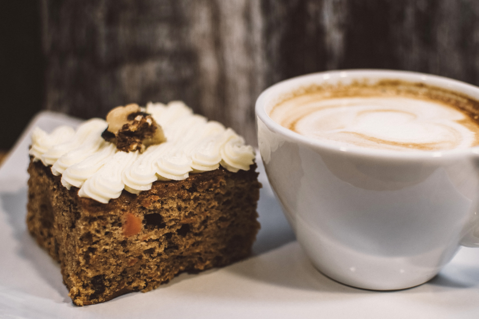
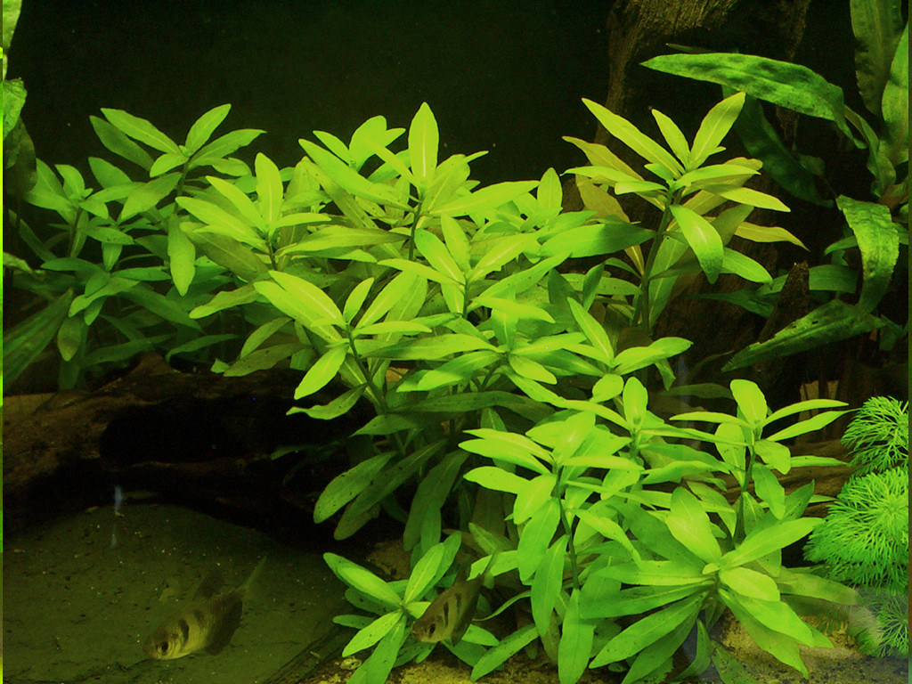
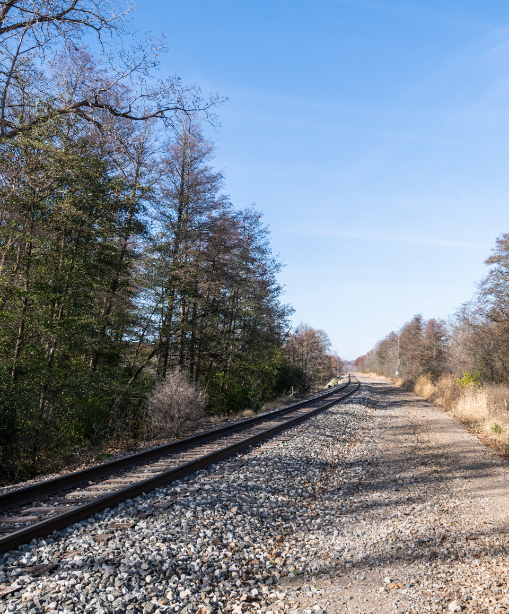

エスプレッソ シュー ムース ティラミス（参考¥890、口コミ時点）
目の前でエスプレッソソースをかける提供スタイル。口溶けの良いムースとシュー生地の組み合わせに、甘さ控えめな大人の味わいが広がります。

ＬＯＧ ＣＯＦＦＥＥ
ナチュレ片山2階、静かな大人のための止まり木。
LOGの物語
「LOG」という店名には、二つの意味を込めています。ひとつは丸太や木材を指す「log」。もうひとつは、航海日誌や記録を意味する「log」。木の温もりに包まれた店内で過ごす時間そのものが、大切な誰かとの記録になってほしい――そんな思いから、この場所は生まれました。
ここは新潟市東区の商業施設「ナチュレ片山」の2階。1階には野菜や冷凍食品、ビールやワインまで揃う自然派食品スーパーがあり、同じ2階には雑貨店やレストランも軒を連ねています。買い物のついでにふらっと立ち寄るのも、コーヒーを目的にわざわざ訪れるのも、どちらも気負わず楽しめる場所です。
木目に触れるたび、水槽を眺めるたび、そしてラテアートに込められた一筆を見るたび。LOG COFFEEでの時間が、あなたの一日に静かな一行を書き加えます。

コーヒーとラテアート
LOG COFFEEのコーヒーは、口にした瞬間に「本格派」と感じていただける一杯です。エスプレッソのコクとミルクの甘みのバランスが取れたカフェラテは、飲みやすくどこかほっとする味わい。ドリンクの種類も豊富で、メニューを前についあれこれ迷ってしまう楽しさがあります。
ラテには、ご希望でラテアートをお付けすることができます。ハートやロゼッタといった絵柄だけでなく、文字を入れることも可能。結婚記念日に、娘さんがそっと注文してくれたラテアート、そんな特別な一杯を仕上げた実例もあります。誕生日や記念日など、大切な一日をカップの中に記録してみてください。
記念日のご相談はInstagramのDMから

数量限定デザート便り
LOG COFFEEのデザートは、数量限定で提供される一皿があるのが魅力です。中でもエスプレッソ シュー ムース ティラミスは、チョコレートソースで美しく盛り付けられたお皿に、店員がその場でエスプレッソソースを注いで仕上げる、目の前でのひと手間が楽しめる一品。甘さは控えめで、エスプレッソソースの苦みとコーヒーの旨みが際立つ、大人のための味わいです。

目の前でエスプレッソソースをかける提供スタイル。口溶けの良いムースとシュー生地の組み合わせに、甘さ控えめな大人の味わいが広がります。

ティラミスと並び人気の数量限定デセール。

コクはありつつも甘さを抑えたソフトクリームと、コーヒーゼリーを一緒に味わうことで生まれる奥行きのある一品です。

季節や仕入れにより内容が変わる限定スイーツです。
※メニュー内容・価格は季節や仕入れにより変更となる場合があります。最新のメニューは店頭・Instagramをご確認ください。

店内
店内には木の温もりが感じられる落ち着いた空間が広がり、熱帯魚が泳ぐ水槽とおしゃれな照明が静かな時間を演出します。建物に入ってすぐの階段のほか、エレベーターも備わっているので、階段に不安のある方でも上りやすい2階です。

テラス
外の光が差し込む席の先には、ベランダ・テラス席をご用意。目の前の線路を貨物列車が通り過ぎていく様子を眺められるのは、この場所ならではの体験です。天気の良い日は、ぜひテラスでゆったりとした時間をお過ごしください。
静かな時間のための場所
LOG COFFEEには、ノートを広げて長居する方や、パソコンを開いて作業をする方の姿はあまり見られません。お子様連れでいらっしゃる場合も、きちんと大人が寄り添っているご家族が多く、落ち着いた空気の中で過ごせるという声をいただいています。
価格帯はやや高めに感じられるかもしれませんが、スタッフの対応や店内の雰囲気、行き届いた清潔感には、多くのお客様にご満足いただいています。大人がゆったりと過ごせる、そんな時間をご用意しています。
ご利用の流れ
ドリンクメニューと、写真付きでわかりやすいスイーツメニューの看板をご覧いただけます。
お決まりになりましたら、カウンターで先にご注文・お会計をお願いします。
お席でお待ちいただくと、できあがり次第スタッフが席までお運びします。
建物入口すぐの階段のほか、エレベーターもございますので、階段が不安な方も安心してご利用いただけます。日によっては、隣接するレストランの席もご利用いただける場合があります。当日の状況はスタッフまでお気軽にご確認ください。
アクセス
LOG COFFEEは、新潟県新潟市東区にある商業施設「ナチュレ片山」の2階にあります。住所詳細は確認中です。
お客様の声
★4.2（129件）
★★★★☆
先に注文・お会計をしてから席で待つスタイルで、ドリンクの種類が多くて迷ってしまうほど。ラテはリクエストでラテアートをしてもらえて、文字まで入れられるので記念日にぴったりでした。珈琲は本格派な味わいで、スタッフの対応や店内の清潔感にも満足しています。
新潟市内にお住まいの方
★★★★☆
1階での買い物のあとに立ち寄れる、落ち着いた雰囲気のお店です。カフェラテはエスプレッソのコクとミルクの甘みのバランスが良く、ソフトクリームは甘さ控えめでコーヒーとの相性も抜群。木の温もりを感じる空間で、ゆったり過ごせました。
買い物ついでに立ち寄られた方
★★★★☆
階段のほかエレベーターもあり、上りやすいのが助かりました。熱帯魚が泳ぐ水槽やおしゃれな照明があり、ベランダ席からは目の前を通る貨物列車を眺めることもできました。数量限定のデザートは目の前でエスプレッソソースをかけてもらえる演出があり、甘さ控えめで大人向けの味わいが印象的でした。
平日にご来店の方
★★★★★
意外な立地に驚きましたが、素敵なお店でした。テラス席で、結婚記念日に合わせてラテアートを注文してもらい、ケーキもおいしく、ゆったりとした時間を過ごせました。
ご家族でご来店の方
★★★★★
ノートを広げて長居する方やパソコン作業をしている方は見当たらず、お子様連れの方もきちんとされていて、居心地の良い空間でした。価格帯はやや高めですが、その分満足できる時間を過ごせます。
静かな時間を求めてご来店の方
数量限定デザートの入荷情報や、季節ごとのラテアート、店内・テラスの様子まで。最新情報は公式Instagramで随時発信しています。記念日のラテアートについてのご相談も、Instagramのダイレクトメッセージからお気軽にどうぞ。
@log.coffee をフォローする※一部の写真はフリー素材のイメージです。実際の店内・お料理写真は貴店ご提供のものに差し替えます。